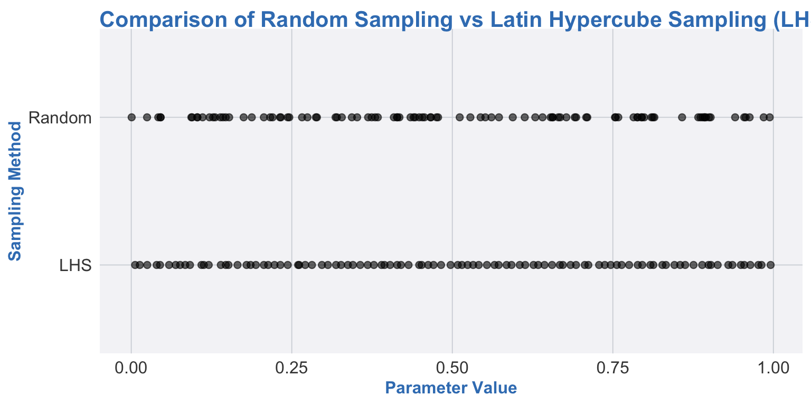

1. Introduction: when “random” needs to be a bit smarter
When we say “let’s explore the parameter space,” we often start with:
“I’ll just draw some random values from each parameter range and see what happens.”
That’s simple random sampling. It’s easy, but:
You can end up with clusters in some regions and holes in others.
In higher dimensions, huge parts of the parameter space may never get touched.
Your expensive model runs get “wasted” exploring the same area over and over.
Enter Latin Hypercube Sampling (LHS):
random, but with manners.
LHS is a way to:
Spread parameter samples evenly across each dimension,
Avoid wasting simulations in duplicate regions,
Get better coverage of the space with fewer model runs.
In this tutorial, we’ll:
Describe what an LHS design is (intuitively and conceptually),
See how it’s used in model calibration,
See how it’s used to build emulators (surrogate models),
Wrap up with why this matters for HEOR and health policy modeling,
And give some references if you want to go full LHS nerd. 😄
2. What is a Latin Hypercube Sampling (LHS) design?
2.1. The basic idea
Imagine you have one parameter, say a probability that can vary from 0 to 1.
If you take 10 random samples, they might all end up between 0.2 and 0.5.
With LHS, you force the samples to spread out.
In 1D, LHS:
Divides the range (e.g., 0 to 1) into \(N\) equal intervals.
In each interval, it selects one value at random.
This gives you \(N\) samples, each in a different interval.
Result: you don’t get 10 samples all in the same tiny region; you get coverage across the whole range.
In higher dimensions (multiple parameters), LHS generalizes this idea.
To be more concrete, let’s show how it works with a graphical example.
Code
library(ggplot2)source("R/theme-heor-book.R") theme_set(theme_heor_book())set.seed(123)n_samples <-100# Random samplingrandom_samples <-runif(n_samples, min =0, max =1)# LHS samplinglhs_intervals <-seq(0, 1, length.out = n_samples +1)lhs_samples <- lhs_intervals[-(n_samples +1)] +runif(n_samples, min =0, max =1/ n_samples)df_lhs <-data.frame(Sample =c(random_samples, lhs_samples),Method =rep(c("Random", "LHS"), each = n_samples))ggplot(df_lhs, aes(x = Sample, y = Method)) +geom_point(size =2, alpha =0.6) +labs(title ="Comparison of Random Sampling vs Latin Hypercube Sampling (LHS)",x ="Parameter Value",y ="Sampling Method" ) +theme_heor_book()

2.2. Multiple dimensions: the “Latin” part
Suppose you have 3 parameters:
\(\theta_1\): transition probability,
\(\theta_2\): hazard ratio,
\(\theta_3\): cost multiplier.
You want \(N\) parameter sets (e.g., \(N = 1000\)).
For each parameter:
Divide its range (or distribution) into \(N\) intervals of equal probability.
Sample one value from each interval.
Then:
For \(\theta_1\), you get 1000 values, each from a different interval.
For \(\theta_2\), you also get 1000 values, one per interval.
Same for \(\theta_3\).
Now you need to pair these values across parameters so that:
Each of the 1000 parameter sets uses one value from each parameter’s list.
No interval is used twice in the same dimension.
This pairing is done in a way that each dimension is “filled” with one sample from each interval — like a Latin square generalization to multiple dimensions. That’s why it’s called Latin Hypercube.
2.3. Why not just simple random sampling?
With the same number of model runs, LHS tends to:
Cover the space more uniformly,
Reduce the chance of “holes”,
Give better space-filling designs.
This is especially important when:
Each model run is expensive (e.g., microsimulation, DES),
You want to explore wide parameter ranges,
You’re building emulators based on a limited number of runs.
3. How do we construct an LHS design? (conceptually)
You don’t need the exact algorithmic details to use LHS in practice (software does the heavy lifting), but conceptually:
Decide how many samples\(N\) you want.
Example: 1000 parameter sets.
For each parameter:
Define its range or distribution.
Divide into \(N\) strata of equal probability (quantiles).
Sample one value from each stratum.
For all parameters together:
Randomly permute the order of the sampled values within each parameter.
Combine the permuted lists so that each row corresponds to one “Latin Hypercube” design point (one parameter set).
The result is an \(N \times K\) matrix (for \(K\) parameters) where:
Each column (parameter) has good coverage of its range,
The combinations are randomized enough to avoid rigid patterns,
The design is more space-filling than simple random draws.
In R, for example, packages like lhs can generate LHS designs directly.
But the important part here is the idea: controlled randomness that spreads samples out.
4. LHS in model calibration
4.1. Calibration: matching the model to reality
In many HEOR and decision models (e.g., cancer screening, chronic disease progression), we don’t know some parameters precisely:
Transition probabilities between states,
Incidence or progression rates,
Relative risks,
Adherence or implementation parameters.
We often have:
Priors or plausible ranges for parameters, and
Calibration targets: observed data (e.g., incidence, prevalence, mortality) the model should reproduce.
Calibration is the process of finding parameter sets that make the model’s outputs line up with these targets.
4.2. Why LHS is useful for calibration
To calibrate, we typically:
Generate a large set of candidate parameter vectors.
Run the model for each vector.
Compare model outputs to calibration targets using some goodness-of-fit criterion.
Keep, weight, or optimize toward the “best” parameter sets.
LHS helps at step 1:
Instead of naive random draws, we use LHS to efficiently explore the parameter space.
This reduces the risk that we miss regions where the model fits well.
For the same number of model runs, we get more informative coverage.
Typical workflow:
Choose ranges or distributions for each parameter (based on literature/expert opinion).
Use LHS to sample, say, 1000–10,000 parameter sets.
Simulate the model at each set.
Compute a fit metric (e.g., sum of squared differences, likelihood).
Use these to:
Select the best-fitting sets,
Or feed into a more formal approximate Bayesian calibration.
In short: LHS turns your calibration search into a structured exploration rather than a random wander.
5. LHS for emulator (surrogate) design
5.1. Why emulators?
Many HEOR models are:
Computationally expensive to run (e.g., complex microsimulations),
Used for PSA, VOI, calibration, or scenario analysis that may need thousands or millions of evaluations.
Running the full model that many times can be impractical.
Enter emulators (or surrogate models):
Statistical or machine learning models (e.g., Gaussian processes, random forests, neural nets),
Trained to approximate the outputs of the original model,
Much faster to evaluate once trained.
5.2. LHS as a design for training emulators
To build an emulator:
Choose inputs (parameters, maybe some scenario variables).
Evaluate the original model at a set of carefully chosen input points.
Fit the emulator to these input–output pairs.
Use the emulator as a stand-in for the original model where speed is needed.
LHS is a natural choice for step 2:
You generate an LHS design over the input space (the parameters you want the emulator to learn).
Run the costly model at each LHS point.
The resulting dataset is a space-filling training set for the emulator.
Benefits:
The emulator “sees” diverse combinations of inputs and learns how the outputs change across the space.
LHS avoids wasting many training points in overlapping regions.
For a fixed number of model runs, you generally get better emulator accuracy than with naive random sampling.
5.3. Using LHS-based emulators in practice
Once you have an emulator trained on an LHS design:
You can perform PSA or VOI analyses using the emulator instead of the original model, dramatically cutting computation time.
You can embed the emulator inside calibration algorithms (e.g., MCMC) where repeated evaluations are needed.
You can explore sensitivity and scenario analyses interactively.
In other words, LHS is a quiet, behind-the-scenes hero of efficient emulator design.
6. Why LHS matters in HEOR and health policy modeling
6.1. Efficient use of expensive simulations
Complex decision-analytic and simulation models are not cheap to run:
They may simulate large virtual cohorts,
Track detailed histories,
Include stochastic elements.
LHS helps you:
Get more information per simulation run,
Avoid redundant sampling,
Make calibration and uncertainty analysis feasible under time and computing constraints.
6.2. Better exploration, fewer blind spots
Policy-relevant questions often depend on:
Extreme but plausible parameter combinations,
Interactions between parameters,
Tail behavior of outcomes (e.g., catastrophic costs, rare events).
LHS improves coverage of these combinations, making it less likely that:
A “good” region of parameter space is never sampled,
Your conclusions rely on a poorly explored neighborhood of parameters.
6.3. Foundation for modern workflows (calibration + emulators)
Many modern HEOR workflows implicitly rely on:
Calibration based on large parameter sets,
Emulator-based PSA and VOI,
Sequential or adaptive designs that start from an initial LHS design.
Understanding LHS helps you:
Design better calibration studies,
Build more reliable emulators,
Communicate why your set of simulations is “enough” (or not) to stakeholders.
7. References and further reading
Some foundational and practical references on Latin Hypercube Sampling, calibration, and emulators:
McKay, Beckman, and Conover (1979). A Comparison of Three Methods for Selecting Values of Input Variables in the Analysis of Output from a Computer Code.
Technometrics 21(2): 239–245.
Classic paper introducing Latin Hypercube Sampling.
Helton and Davis (2003). Latin Hypercube Sampling and the Propagation of Uncertainty in Analyses of Complex Systems.
Reliability Engineering & System Safety 81(1): 23–69.
Detailed discussion of LHS and uncertainty analysis in complex models.
Santner, Williams, and Notz (2003). The Design and Analysis of Computer Experiments.
Springer.
Comprehensive reference on experimental design for computer models, including LHS and emulators.
Kennedy and O’Hagan (2001). Bayesian Calibration of Computer Models.
Journal of the Royal Statistical Society, Series B 63(3): 425–464.
Seminal paper on calibration and emulators in the Bayesian framework.
These will take you from “I know LHS is a smart way to sample” to “I can confidently design calibration and emulator studies like a grown-up.” 😄
Source Code
---title: "Latin Hypercube Sampling (LHS) for Calibration and Emulators"---# 1. Introduction: when “random” needs to be a bit smarterWhen we say “let’s explore the parameter space,” we often start with:> “I’ll just draw some random values from each parameter range and see what happens.”That’s **simple random sampling**. It’s easy, but:- You can end up with **clusters** in some regions and **holes** in others.- In higher dimensions, huge parts of the parameter space may never get touched.- Your expensive model runs get “wasted” exploring the same area over and over.Enter **Latin Hypercube Sampling (LHS)**: random, *but with manners*.LHS is a way to:- Spread parameter samples **evenly** across each dimension,- Avoid wasting simulations in duplicate regions,- Get better coverage of the space with **fewer** model runs.In this tutorial, we’ll:- Describe what an LHS design is (intuitively and conceptually),- See how it’s used in **model calibration**,- See how it’s used to build **emulators** (surrogate models),- Wrap up with why this matters for HEOR and health policy modeling,- And give some references if you want to go full LHS nerd. 😄---# 2. What is a Latin Hypercube Sampling (LHS) design?## 2.1. The basic ideaImagine you have one parameter, say a probability that can vary from 0 to 1.- If you take 10 random samples, they might all end up between 0.2 and 0.5.- With LHS, you **force** the samples to spread out.In 1D, LHS:1. Divides the range (e.g., 0 to 1) into $N$ equal **intervals**.2. In each interval, it selects **one** value at random.3. This gives you $N$ samples, each in a different interval.Result: you don’t get 10 samples all in the same tiny region; you get coverageacross the whole range.In higher dimensions (multiple parameters), LHS generalizes this idea.To be more concrete, let's show how it works with a graphical example.```{r}#| label: lhs-1d#| fig-width: 8#| fig-height: 4library(ggplot2)source("R/theme-heor-book.R") theme_set(theme_heor_book())set.seed(123)n_samples <-100# Random samplingrandom_samples <-runif(n_samples, min =0, max =1)# LHS samplinglhs_intervals <-seq(0, 1, length.out = n_samples +1)lhs_samples <- lhs_intervals[-(n_samples +1)] +runif(n_samples, min =0, max =1/ n_samples)df_lhs <-data.frame(Sample =c(random_samples, lhs_samples),Method =rep(c("Random", "LHS"), each = n_samples))ggplot(df_lhs, aes(x = Sample, y = Method)) +geom_point(size =2, alpha =0.6) +labs(title ="Comparison of Random Sampling vs Latin Hypercube Sampling (LHS)",x ="Parameter Value",y ="Sampling Method" ) +theme_heor_book()```## 2.2. Multiple dimensions: the “Latin” partSuppose you have 3 parameters:- $\theta_1$: transition probability,- $\theta_2$: hazard ratio,- $\theta_3$: cost multiplier.You want $N$ parameter sets (e.g., $N = 1000$).For each parameter:1. Divide its range (or distribution) into $N$ intervals of equal probability.2. Sample **one value** from each interval.Then:- For $\theta_1$, you get 1000 values, each from a different interval.- For $\theta_2$, you also get 1000 values, one per interval.- Same for $\theta_3$.Now you need to **pair** these values across parameters so that:- Each of the 1000 parameter sets uses **one** value from each parameter’s list.- No interval is used twice **in the same dimension**.This pairing is done in a way that each dimension is “filled” with one samplefrom each interval — like a **Latin square** generalization to multipledimensions. That’s why it’s called **Latin Hypercube**.## 2.3. Why not just simple random sampling?With the same number of model runs, LHS tends to:- Cover the space **more uniformly**,- Reduce the chance of “holes”,- Give better **space-filling** designs.This is especially important when:- Each model run is **expensive** (e.g., microsimulation, DES),- You want to explore **wide parameter ranges**,- You’re building **emulators** based on a limited number of runs.---# 3. How do we construct an LHS design? (conceptually)You don’t need the exact algorithmic details to use LHS in practice (softwaredoes the heavy lifting), but conceptually:1. **Decide how many samples** $N$ you want. - Example: 1000 parameter sets.2. For each parameter: - Define its range or distribution. - Divide into $N$ strata of equal probability (quantiles). - Sample one value from each stratum.3. For all parameters together: - Randomly permute the order of the sampled values within each parameter. - Combine the permuted lists so that each row corresponds to one “Latin Hypercube” design point (one parameter set).The result is an $N \times K$ matrix (for $K$ parameters) where:- Each column (parameter) has good coverage of its range,- The combinations are randomized enough to avoid rigid patterns,- The design is more space-filling than simple random draws.In R, for example, packages like `lhs` can generate LHS designs directly. But the important part here is the **idea**: controlled randomness that spreadssamples out.---# 4. LHS in model calibration## 4.1. Calibration: matching the model to realityIn many HEOR and decision models (e.g., cancer screening, chronic diseaseprogression), we don’t know some parameters precisely:- Transition probabilities between states,- Incidence or progression rates,- Relative risks,- Adherence or implementation parameters.We often have:- **Priors or plausible ranges** for parameters, and- **Calibration targets**: observed data (e.g., incidence, prevalence, mortality) the model should reproduce.Calibration is the process of finding parameter sets that make the model’soutputs line up with these targets.## 4.2. Why LHS is useful for calibrationTo calibrate, we typically:1. Generate a large set of candidate parameter vectors.2. Run the model for each vector.3. Compare model outputs to calibration targets using some **goodness-of-fit** criterion.4. Keep, weight, or optimize toward the “best” parameter sets.LHS helps at **step 1**:- Instead of naive random draws, we use LHS to **efficiently explore** the parameter space.- This reduces the risk that we miss regions where the model fits well.- For the same number of model runs, we get **more informative coverage**.Typical workflow:- Choose ranges or distributions for each parameter (based on literature/expert opinion).- Use LHS to sample, say, 1000–10,000 parameter sets.- Simulate the model at each set.- Compute a fit metric (e.g., sum of squared differences, likelihood).- Use these to: - Select the best-fitting sets, - Or feed into a more formal approximate Bayesian calibration.In short: LHS turns your calibration search into a **structured exploration**rather than a random wander.---# 5. LHS for emulator (surrogate) design## 5.1. Why emulators?Many HEOR models are:- **Computationally expensive** to run (e.g., complex microsimulations),- Used for **PSA, VOI, calibration**, or **scenario analysis** that may need thousands or millions of evaluations.Running the full model that many times can be **impractical**.Enter **emulators** (or surrogate models):- Statistical or machine learning models (e.g., Gaussian processes, random forests, neural nets),- Trained to approximate the outputs of the original model,- Much faster to evaluate once trained.## 5.2. LHS as a design for training emulatorsTo build an emulator:1. Choose inputs (parameters, maybe some scenario variables).2. Evaluate the original model at a set of carefully chosen input points.3. Fit the emulator to these input–output pairs.4. Use the emulator as a stand-in for the original model where speed is needed.LHS is a natural choice for step 2:- You generate an LHS design over the input space (the parameters you want the emulator to learn).- Run the costly model at each LHS point.- The resulting dataset is a **space-filling training set** for the emulator.Benefits:- The emulator “sees” diverse combinations of inputs and learns how the outputs change across the space.- LHS avoids wasting many training points in overlapping regions.- For a fixed number of model runs, you generally get better emulator accuracy than with naive random sampling.## 5.3. Using LHS-based emulators in practiceOnce you have an emulator trained on an LHS design:- You can perform **PSA** or **VOI** analyses using the emulator instead of the original model, dramatically cutting computation time.- You can embed the emulator inside calibration algorithms (e.g., MCMC) where repeated evaluations are needed.- You can explore sensitivity and scenario analyses interactively.In other words, LHS is a quiet, behind-the-scenes hero of efficient emulatordesign.---# 6. Why LHS matters in HEOR and health policy modeling## 6.1. Efficient use of expensive simulationsComplex decision-analytic and simulation models are not cheap to run:- They may simulate large virtual cohorts,- Track detailed histories,- Include stochastic elements.LHS helps you:- Get more information per simulation run,- Avoid redundant sampling,- Make calibration and uncertainty analysis **feasible** under time and computing constraints.## 6.2. Better exploration, fewer blind spotsPolicy-relevant questions often depend on:- Extreme but plausible parameter combinations,- Interactions between parameters,- Tail behavior of outcomes (e.g., catastrophic costs, rare events).LHS improves coverage of these combinations, making it less likely that:- A “good” region of parameter space is never sampled,- Your conclusions rely on a poorly explored neighborhood of parameters.## 6.3. Foundation for modern workflows (calibration + emulators)Many modern HEOR workflows implicitly rely on:- Calibration based on large parameter sets,- Emulator-based PSA and VOI,- Sequential or adaptive designs that start from an initial LHS design.Understanding LHS helps you:- Design better calibration studies,- Build more reliable emulators,- Communicate why your set of simulations is “enough” (or not) to stakeholders.---# 7. References and further readingSome foundational and practical references on Latin Hypercube Sampling,calibration, and emulators:1. **McKay, Beckman, and Conover (1979).** *A Comparison of Three Methods for Selecting Values of Input Variables in the Analysis of Output from a Computer Code.* Technometrics 21(2): 239–245. Classic paper introducing Latin Hypercube Sampling.2. **Helton and Davis (2003).** *Latin Hypercube Sampling and the Propagation of Uncertainty in Analyses of Complex Systems.* Reliability Engineering & System Safety 81(1): 23–69. Detailed discussion of LHS and uncertainty analysis in complex models.3. **Santner, Williams, and Notz (2003).** *The Design and Analysis of Computer Experiments.* Springer. Comprehensive reference on experimental design for computer models, including LHS and emulators.4. **Kennedy and O’Hagan (2001).** *Bayesian Calibration of Computer Models.* Journal of the Royal Statistical Society, Series B 63(3): 425–464. Seminal paper on calibration and emulators in the Bayesian framework.These will take you from “I know LHS is a smart way to sample” to “I canconfidently design calibration and emulator studies like a grown-up.” 😄